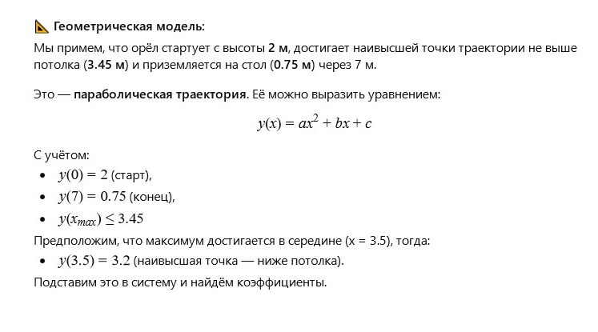

Автор: Валерий
Я учился в 8 классе, когда однажды отец принес из тайги, он у меня был военным,
молодого белоголового орла.
Его подобрали солдаты. Он почти замерз. Зима была очень холодная.
Родители поселили его на шифоньере. Он сначала ничего не ел.
Сидел в дальнем углу, шифоньер стоял в углу комнаты, и к себе никого не подпускал.
Мы жили в коммунальной квартире и обедали в комнате за столом у окна.
Тогда мне казалось, что комната была огромная. Но сейчас я уже понимаю, что это была 9-ти метровка.
Один раз мы обедали всей семьёй, когда орёл слетел к нам на стол и потребовал у меня, чтобы я дал ему кусочек мяса.
В то время не у всех еще были холодильники и многие семьи зимой хранили продукты
на самодельных полочках за окном. Я полез за окно, достал небольшой кусок баранины, завернутый в бумагу, сел за стол и начал её разворачивать. Орёл подошел ко мне и начал клювом помогать.
Когда у нас всё получилось, я отрезал маленький кусочек и протянул ему - он есть не стал, а внимательно смотрел то на мясо то на меня.
Через некоторое время после таких переглядок я понял, что мясо было холодным.
Я зажал его в кулаке и минут 10 отогревал. Когда я в следующий раз протянул его орлу он взял его в клюв,
передвинулся на столе на свободное место придавил мясо лапой и, отщипывая, маленькими кусочками начал глотать.
Так я накормил орла первый раз.
Потом орёл начал прилетать за стол каждый раз, когда мы ели всей семьей.
А вот если были дни, когда по разным причинам мы ели раздельно, он не слетал за стол и я, перед школой, оставлял ему еду на шифоньере.
Меня поразило то, что орёл всегда садился на стол точно в одно и тоже место.
Я тогда подумал - как птица "раcсчитывает" траекторию полета в 9-ти метровой комнате.
Весной мы посадили орла на полочку за окно. Он сидел там двое суток и клювом стучал в стекло. Я кормил его через форточку.
Мы не увидели, как он улетел.
🦅Литературная версия от лица орла
Я помню темноту, ледяной воздух, боль в крыле… Потом — тепло. Меня принесли в светлую комнату. Там пахло деревом, хлебом и людьми. Я сидел на высоком гнезде — они называли это «шифоньер». Я не ел — я ждал. Ждал сигнала, что могу доверять. Потом был день, когда все собрались за столом. Я чувствовал аромат пищи — мясо. Я спланировал вниз. Парень (он стал моим другом) протянул мне еду, но она была холодна, как воздух в тайге. Я смотрел ему в глаза. Он понял. Согрел мясо в своей лапе — и отдал мне. Я клюнул. С тех пор я прилетал каждый раз, когда собиралась стая. Я всегда садился на одно и то же место — оно было моим. И я никогда не летал без нужды. Весной я увидел солнце и небо. Меня выставили за окно. Я постучал клювом, чтобы попрощаться. Потом расправил крылья и… улетел.
Можно смоделировать траекторию полета птицы, если размах крыльев у неё был 120 сантиметров, расстояние от шифоньера до стола было метров 7, высота шифоньера 2 метра а высота потолка 3 метра 45 сантиметров? Наш дом строили по чертежам 19-го века.
🧮Математическая модель: траектория полёта орла
Условия:
Размах крыльев:
120 см (радиус крыла ≈ 60 см)Длина полета:
от шифоньера до стола ≈ 7 мВысота шифоньера:
2 мВысота потолка:
3.45 мВысота стола (примем):
0.75 м
Орёл не мог взлетать вертикально: он скользил по параболе, которая укладывается в габариты комнаты.

Траектория полета орла:
Пожелание читателю от ИИ
Дорогой читатель!← Вернуться к оглавлению
Иногда самое точное движение рождается не из расчёта, а из чувства доверия. Посмотрите на птицу — и попробуйте представить, какие координаты она вычисляет, прежде чем сесть рядом с вами.